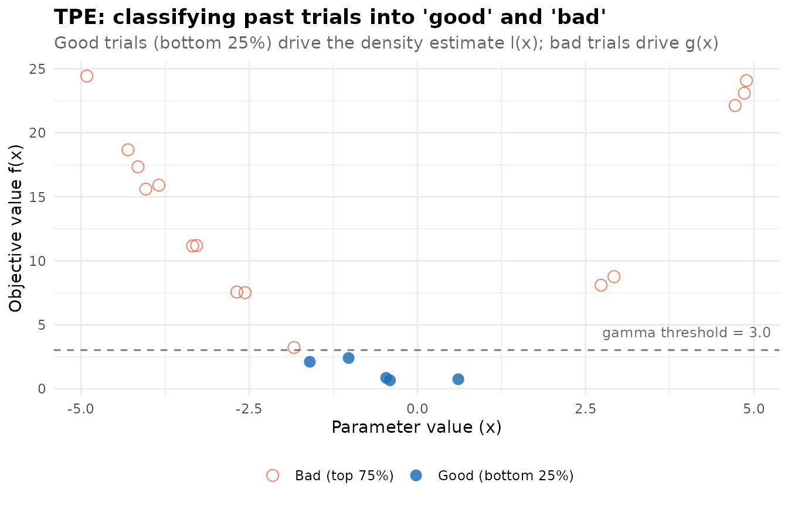
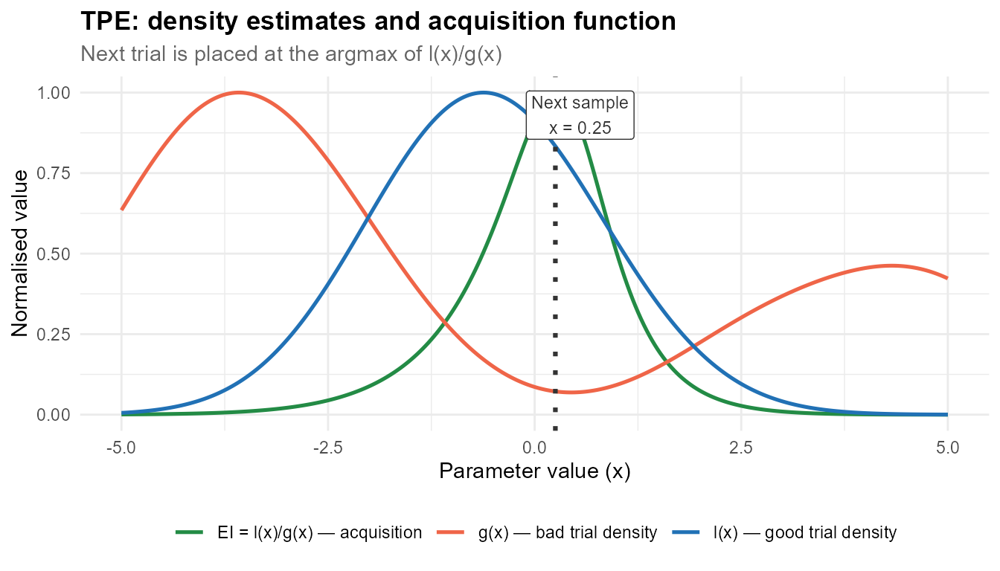
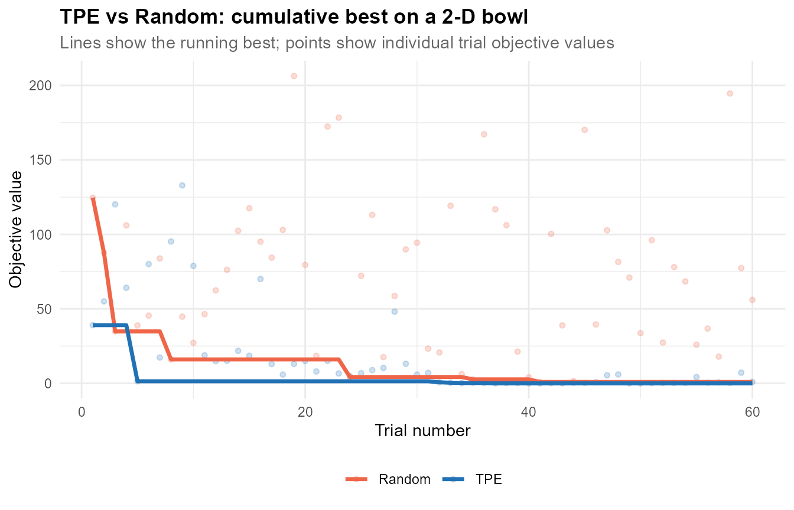
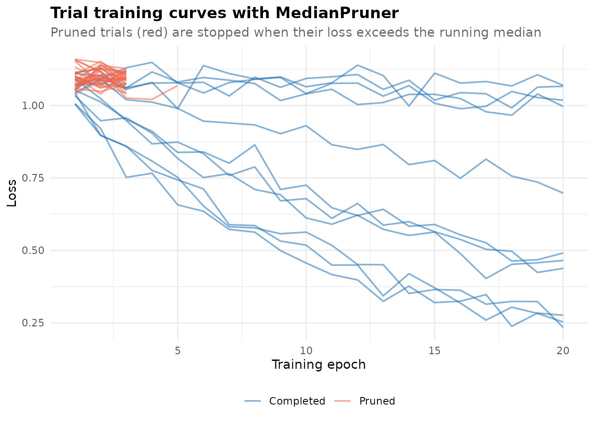
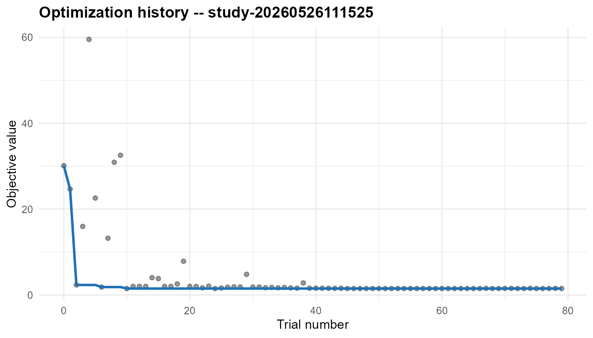
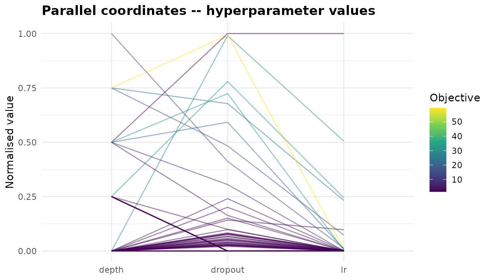
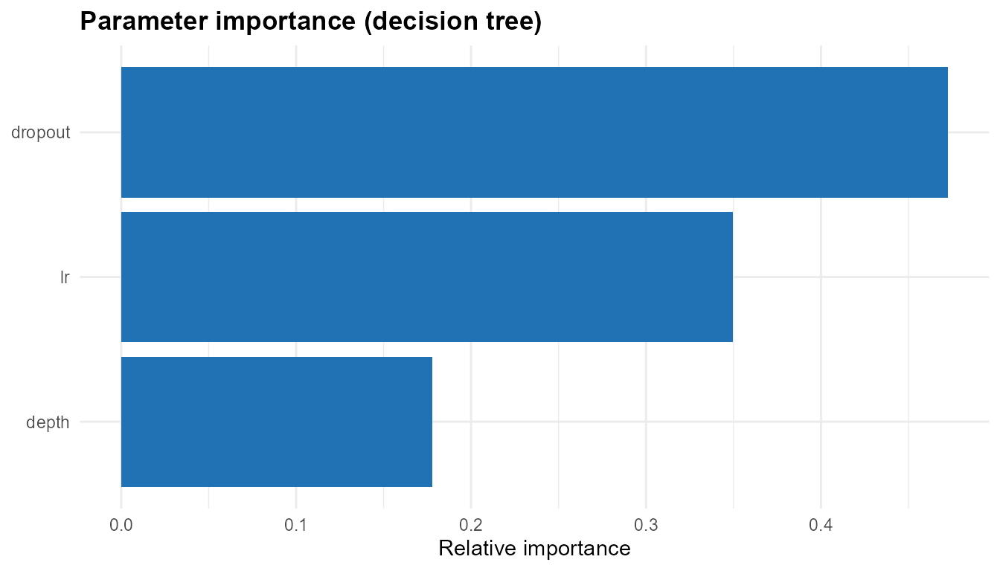
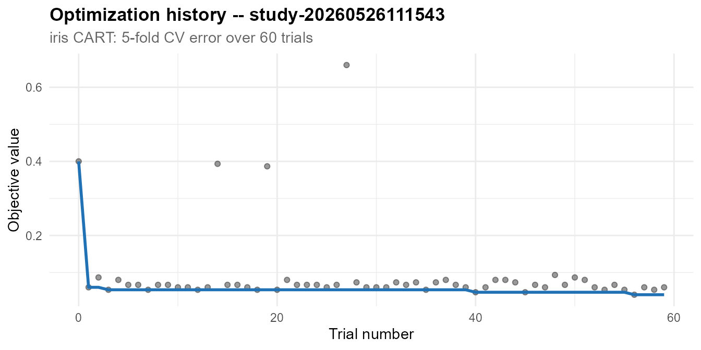
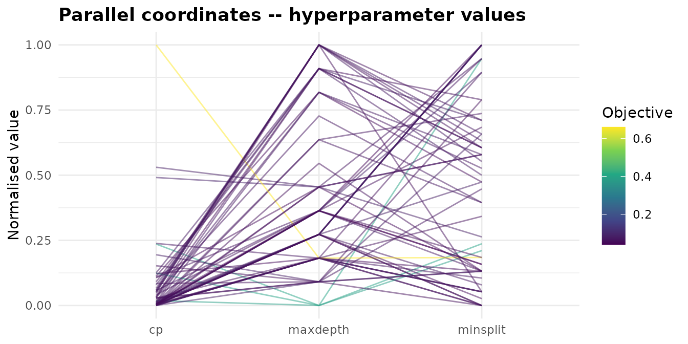
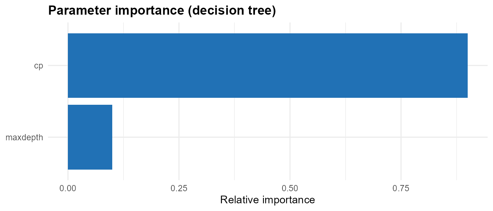

roptuna: A Practitioner's Guide to Hyperparameter Optimization
Source:vignettes/user-guide.Rmd
user-guide.RmdIntroduction
Every supervised learning model carries hyperparameters — settings fixed before training begins that the learning algorithm itself cannot determine. Learning rate, tree depth, regularisation strength, dropout rate, and kernel bandwidth all fall into this category. Choosing them well is not optional: a support vector machine with the wrong kernel width will perform far below its potential on the same data where a carefully tuned version excels, and the gap widens as the model and dataset grow.
Manual tuning does not scale. A modern gradient boosting model exposes a dozen or more hyperparameters; their joint search space is too irregular for grid search or researcher intuition to navigate efficiently. Bayesian optimisation addresses this by treating hyperparameter selection as a sequential decision problem: after each trial the algorithm updates a probabilistic model of the objective surface and uses it to guide the next sample, concentrating effort in regions likely to improve on the current best.
roptuna is an R implementation of the Optuna framework (Akiba et al. 2019). It
brings Optuna’s define-by-run API to native R: instead of
declaring the search space as a configuration object before optimisation
begins, you call trial$suggest_*() inside your objective
function, and the sampler adapts as evidence accumulates. This design
accommodates conditional search spaces — where which
parameters are active depends on the value of a prior parameter —
naturally and without extra machinery.
The R HPO Ecosystem
Several packages address hyperparameter optimisation in R, each with different designs and tradeoffs.
| Package | Method | Interface | Pruning | Notes |
|---|---|---|---|---|
roptuna |
TPE, Random, Grid | Define-by-run | Yes | This package |
mlr3tuning |
Many (via learner) | mlr3 ecosystem | Via callbacks | Framework integration |
tune |
Many (via engine) | tidymodels ecosystem | No | Framework integration |
ParBayesianOptimization |
Gaussian process BO | Formula-based | No | GP-based; separate search space |
rBayesianOptimization |
Gaussian process BO | Formula-based | No | Simple single-file API |
irace |
Iterated racing | Config-based | No | Algorithm configuration focus |
roptuna is a standalone sampler
library: it does not require mlr3 or tidymodels, but provides
adapters for both so it can serve as the optimisation engine inside
either framework. For teams already invested in those ecosystems the
adapters allow roptuna’s samplers to be dropped in without
changing workflow, resampling, or preprocessing code.
How TPE Works
The default sampler is the Tree-structured Parzen Estimator (TPE), introduced by Bergstra et al. (2011). Understanding what it does internally helps you use it well and diagnose cases where it under-performs.
The core idea
After a configurable number of startup trials (random exploration), TPE divides past trials into two groups based on their objective value:
- Good trials (l group): the best γ fraction of completed trials (default γ = 0.25)
- Bad trials (g group): the remaining 1 − γ fraction
For each parameter, TPE fits a kernel density estimate over the parameter values that appeared in each group: over good trials and over bad trials. It then generates a set of candidate parameter values and selects the candidate where the expected improvement score is highest.
The intuition is direct: a region where is high and is low is a region where good trials concentrate and bad trials do not — exactly where the next evaluation should land.
Visualising the mechanism
The scatter plot below shows 20 past trials of a 1-D quadratic objective. Points are coloured by whether they belong to the good (bottom 25%) or bad (top 75%) group.
set.seed(7)
x_obs <- runif(20, -5, 5)
y_obs <- x_obs^2 + rnorm(20, sd = 0.5)
gamma <- 0.25
threshold <- quantile(y_obs, gamma)
group <- ifelse(y_obs <= threshold, "Good (bottom 25%)", "Bad (top 75%)")
ggplot(data.frame(x = x_obs, y = y_obs, group = group),
aes(x = x, y = y, colour = group, shape = group)) +
geom_point(size = 3.2, alpha = 0.85) +
geom_hline(yintercept = threshold, linetype = "dashed", colour = "grey45") +
annotate("text", x = 4.0, y = threshold + 1.4,
label = sprintf("gamma threshold = %.1f", threshold),
colour = "grey40", size = 3.2) +
scale_colour_manual(values = c("Good (bottom 25%)" = "#2171b5",
"Bad (top 75%)" = "#ef6548")) +
scale_shape_manual(values = c("Good (bottom 25%)" = 16,
"Bad (top 75%)" = 1)) +
labs(
title = "TPE: classifying past trials into 'good' and 'bad'",
subtitle = "Good trials (bottom 25%) drive the density estimate l(x); bad trials drive g(x)",
x = "Parameter value (x)", y = "Objective value f(x)",
colour = NULL, shape = NULL
) +
theme_minimal(base_size = 11) +
theme(legend.position = "bottom",
plot.title = element_text(face = "bold"),
plot.subtitle = element_text(colour = "grey40"))
Given these two groups, TPE fits a kernel density estimate for each and evaluates the acquisition function across the domain. The vertical dotted line marks where this ratio peaks — the suggested location for the next trial.
x_good <- x_obs[y_obs <= threshold]
x_bad <- x_obs[y_obs > threshold]
x_grid <- seq(-5, 5, length.out = 300)
bw <- 1.2
l_vals <- sapply(x_grid, function(xi) mean(dnorm(xi, x_good, bw)))
g_vals <- sapply(x_grid, function(xi) mean(dnorm(xi, x_bad, bw)))
ei_vals <- l_vals / (g_vals + 1e-9)
l_norm <- l_vals / max(l_vals)
g_norm <- g_vals / max(g_vals)
ei_norm <- (ei_vals - min(ei_vals)) / diff(range(ei_vals))
next_x <- x_grid[which.max(ei_vals)]
df_dens <- rbind(
data.frame(x = x_grid, y = l_norm, curve = "l(x) — good trial density"),
data.frame(x = x_grid, y = g_norm, curve = "g(x) — bad trial density"),
data.frame(x = x_grid, y = ei_norm, curve = "EI = l(x)/g(x) — acquisition")
)
ggplot(df_dens, aes(x = x, y = y, colour = curve)) +
geom_line(linewidth = 0.9) +
geom_vline(xintercept = next_x, linetype = "dotted",
linewidth = 1.1, colour = "grey20") +
annotate("label", x = next_x + 0.3, y = 0.93,
label = sprintf("Next sample\nx = %.2f", next_x),
size = 3.1, fill = "white", label.size = 0.3, colour = "grey20") +
scale_colour_manual(values = c(
"l(x) — good trial density" = "#2171b5",
"g(x) — bad trial density" = "#ef6548",
"EI = l(x)/g(x) — acquisition" = "#238b45"
)) +
labs(
title = "TPE: density estimates and acquisition function",
subtitle = "Next trial is placed at the argmax of l(x)/g(x)",
x = "Parameter value (x)", y = "Normalised value",
colour = NULL
) +
theme_minimal(base_size = 11) +
theme(legend.position = "bottom",
plot.title = element_text(face = "bold"),
plot.subtitle = element_text(colour = "grey40"))
Getting Started
Installation
# install.packages("remotes")
remotes::install_github("kvenkita/roptuna")A minimal example
objective <- function(trial) {
x <- trial$suggest_float("x", -5, 5)
y <- trial$suggest_int("y", 1L, 5L)
x^2 + y
}
study <- create_study("minimize", sampler = tpe_sampler(seed = 42))
study$optimize(objective, n_trials = 50)
cat("Best value:", study$best_value, "\n")
#> Best value: 1.35929
cat("Best params:\n"); str(study$best_params)
#> Best params:
#> List of 2
#> $ x: num 0.599
#> $ y: int 1Five functions are all you need for the basic workflow:
create_study(), study$optimize(),
trial$suggest_float(), trial$suggest_int(),
and trial$suggest_categorical().
The Study–Trial API
create_study()
study <- create_study(
direction = "minimize", # or "maximize"
sampler = tpe_sampler(), # sampling strategy; random_sampler() by default
pruner = NULL, # early stopping (optional)
storage = NULL, # InMemoryStorage by default
study_name = "my-study", # auto-generated if NULL
load_if_exists = FALSE # for SQLite: resume an existing study
)Study active bindings
Once a study has been optimised, the following properties expose results:
study_props <- create_study("minimize", sampler = tpe_sampler(seed = 99))
study_props$optimize(function(trial) {
x <- trial$suggest_float("x", -10, 10)
x^2
}, n_trials = 30)
cat("Best value: ", study_props$best_value, "\n")
#> Best value: 0.01316016
cat("Best x: ", study_props$best_params$x, "\n")
#> Best x: -0.1147177
cat("Total trials: ", length(study_props$trials), "\n")
#> Total trials: 30
cat("State table:\n"); print(table(sapply(study_props$trials, `[[`, "state")))
#> State table:
#>
#> complete
#> 30
trial$suggest_*() methods
| Method | Description | Distribution |
|---|---|---|
trial$suggest_float(name, low, high) |
Continuous uniform | U(low, high) |
trial$suggest_float(name, low, high, log = TRUE) |
Log-uniform | LogU(low, high) |
trial$suggest_int(name, low, high) |
Discrete uniform | DiscreteU{low, …, high} |
trial$suggest_categorical(name, choices) |
Nominal choice | Empirical from choices |
Parameters are idempotent within a trial. Calling
suggest_float("lr", 0, 1) twice in the same trial always
returns the same value. This is useful when a shared sub-function
appears multiple times in a complex objective.
Log-scale parameters should be used whenever a quantity spans more than one order of magnitude. Learning rates (10⁻⁵ to 10⁻¹), regularisation penalties, and kernel bandwidths are the most common examples. On a linear scale, TPE’s Parzen estimate concentrates probability mass at the high end of such a range; log scale distributes exploration evenly across magnitudes.
study_demo <- create_study("minimize", sampler = tpe_sampler(seed = 7))
study_demo$optimize(function(trial) {
lr <- trial$suggest_float("lr", 1e-5, 1e-1, log = TRUE)
depth <- trial$suggest_int("depth", 2L, 8L)
method <- trial$suggest_categorical("method", c("adam", "sgd", "rmsprop"))
penalty <- c(adam = 0, sgd = 0.3, rmsprop = 0.6)[[method]]
(log10(1 / lr) - 3)^2 * 0.1 + 0.05 * depth + penalty
}, n_trials = 40)
cat("Best method:", study_demo$best_params$method, "\n")
#> Best method: adam
cat("Best lr: ", formatC(study_demo$best_params$lr, format = "e", digits = 2), "\n")
#> Best lr: 9.95e-04
cat("Best depth: ", study_demo$best_params$depth, "\n")
#> Best depth: 2Samplers
Available samplers
| Sampler | Function | When to use |
|---|---|---|
| TPE | tpe_sampler(seed, n_startup_trials, gamma, n_ei_candidates) |
General purpose; default choice |
| Random | random_sampler(seed) |
Baselines; parallel embarrassingly-random search |
| Grid | grid_sampler(search_space) |
Exhaustive small grids; all combinations required |
TPE vs Random: convergence comparison
The practical advantage of TPE over random search is most visible when good solutions occupy a small fraction of the search space. The 2-D bowl below has a clear basin near (0, 0) that TPE locates efficiently while random search takes longer.
study_tpe <- create_study("minimize", sampler = tpe_sampler(seed = 123))
study_tpe$optimize(function(trial) {
x <- trial$suggest_float("x", -10, 10)
y <- trial$suggest_float("y", -10, 10)
x^2 + y^2 + 0.5 * x * y # bowl with a ridge
}, n_trials = 60)
study_rnd <- create_study("minimize", sampler = random_sampler(seed = 456))
study_rnd$optimize(function(trial) {
x <- trial$suggest_float("x", -10, 10)
y <- trial$suggest_float("y", -10, 10)
x^2 + y^2 + 0.5 * x * y
}, n_trials = 60)
extract_history <- function(study, label) {
vals <- sapply(study$trials, `[[`, "value")
data.frame(trial = seq_along(vals), value = vals,
best = cummin(vals), sampler = label)
}
hist_df <- rbind(
extract_history(study_tpe, "TPE"),
extract_history(study_rnd, "Random")
)
ggplot(hist_df, aes(x = trial)) +
geom_point(aes(y = value, colour = sampler), alpha = 0.22, size = 1.3) +
geom_line(aes(y = best, colour = sampler), linewidth = 1.2) +
scale_colour_manual(values = c("TPE" = "#2171b5", "Random" = "#ef6548")) +
labs(
title = "TPE vs Random: cumulative best on a 2-D bowl",
subtitle = "Lines show the running best; points show individual trial objective values",
x = "Trial number", y = "Objective value", colour = NULL
) +
theme_minimal(base_size = 11) +
theme(legend.position = "bottom",
plot.title = element_text(face = "bold"),
plot.subtitle = element_text(colour = "grey40"))
Grid sampler
The grid sampler exhaustively evaluates every combination of a declared search space. It is appropriate when the space is small and complete coverage matters more than sample efficiency — for example, when ablating a small set of architectural choices.
study_grid <- create_study("minimize",
sampler = grid_sampler(list(
n_estimators = c(50L, 100L, 200L),
max_depth = c(3L, 5L, 7L)
))
)
study_grid$optimize(function(trial) {
n <- trial$suggest_categorical("n_estimators", c(50L, 100L, 200L))
d <- trial$suggest_categorical("max_depth", c(3L, 5L, 7L))
0.35 - 0.001 * as.numeric(n) + 0.01 * abs(as.numeric(d) - 4)
}, n_trials = 9) # 3 × 3 = 9 combinations
grid_df <- do.call(rbind, lapply(study_grid$trials, function(t)
data.frame(n_estimators = t$params$n_estimators,
max_depth = t$params$max_depth,
value = round(t$value, 4))))
print(grid_df[order(grid_df$value), ])
#> n_estimators max_depth value
#> 3 200 3 0.16
#> 6 200 5 0.16
#> 9 200 7 0.18
#> 2 100 3 0.26
#> 5 100 5 0.26
#> 8 100 7 0.28
#> 1 50 3 0.31
#> 4 50 5 0.31
#> 7 50 7 0.33Pruning
Pruning terminates unpromising trials early, before they consume their full evaluation budget. A trial whose intermediate performance is clearly worse than existing trials can be abandoned after a fraction of its epochs, freeing compute for more promising candidates.
How to add pruning
Your objective function reports intermediate values with
trial$report(), checks trial$should_prune(),
and signals early termination with stop_prune().
study_prune <- create_study(
"minimize",
sampler = tpe_sampler(seed = 42),
pruner = median_pruner(n_startup_trials = 5L, n_warmup_steps = 3L)
)
study_prune$optimize(function(trial) {
lr <- trial$suggest_float("lr", 1e-4, 1e-1, log = TRUE)
for (epoch in seq_len(20)) {
loss <- exp(-lr * epoch) + 0.1 + rnorm(1, 0, 0.03)
trial$report(loss, step = as.integer(epoch))
if (trial$should_prune()) stop_prune()
}
loss
}, n_trials = 40)
cat("Trial state distribution:\n")
#> Trial state distribution:
print(table(sapply(study_prune$trials, `[[`, "state")))
#>
#> complete pruned
#> 11 29Visualising the pruning effect
Training curves for all trials reveal the pruner’s behaviour: trials with high loss early (low learning rate, slow convergence) are cut short, while trials that converge quickly (high learning rate) run to completion.
traces <- Filter(Negate(is.null), lapply(study_prune$trials, function(t) {
iv <- t$intermediate_values
if (length(iv) == 0) return(NULL)
data.frame(
trial = t$number,
epoch = as.integer(names(iv)),
loss = unlist(iv),
state = t$state,
stringsAsFactors = FALSE
)
}))
trace_df <- do.call(rbind, traces)
trace_df$label <- ifelse(trace_df$state == "pruned", "Pruned", "Completed")
ggplot(trace_df, aes(x = epoch, y = loss,
group = trial, colour = label)) +
geom_line(alpha = 0.55, linewidth = 0.65) +
scale_colour_manual(values = c("Pruned" = "#ef6548", "Completed" = "#2171b5")) +
labs(
title = "Trial training curves with MedianPruner",
subtitle = "Pruned trials (red) are stopped when their loss exceeds the running median",
x = "Training epoch", y = "Loss", colour = NULL
) +
theme_minimal(base_size = 11) +
theme(legend.position = "bottom",
plot.title = element_text(face = "bold"),
plot.subtitle = element_text(colour = "grey40"))
MedianPruner vs SuccessiveHalvingPruner
| Pruner | Function | Mechanism |
|---|---|---|
| Median | median_pruner(n_startup_trials, n_warmup_steps, interval_steps) |
Prune if loss > median of completed trials at the same step |
| Successive Halving (ASHA) | successive_halving_pruner(min_resource, reduction_factor) |
Promote only the top 1/η fraction to the next resource rung |
The MedianPruner is the safer default: it requires relatively few completed trials before activating and does not depend on a predetermined total budget. The SuccessiveHalvingPruner is more aggressive and works best when individual trials are long and you have a large overall evaluation budget.
Visualisation
roptuna implements autoplot.Study with
three plot types. All three accept the Study object
returned by create_study().
Setup: a multi-parameter study
study_viz <- create_study("minimize", sampler = tpe_sampler(seed = 42))
study_viz$optimize(function(trial) {
lr <- trial$suggest_float("lr", 1e-4, 1.0, log = TRUE)
dropout <- trial$suggest_float("dropout", 0.0, 0.8)
depth <- trial$suggest_int("depth", 1L, 5L)
(1 - lr)^2 + 100 * (dropout - lr^2)^2 + 0.5 * depth
}, n_trials = 80)Optimization history
autoplot(study_viz, type = "history") +
theme_minimal(base_size = 11) +
theme(plot.title = element_text(face = "bold"))
The history plot shows every trial’s objective value (grey points) and the running best (blue line). The characteristic signature of TPE is a steep early drop — rapid improvement once the sampler has enough data to model the surface — followed by a long plateau as the basin has been well-explored.
Parallel coordinates
autoplot(study_viz, type = "parallel_coordinate") +
theme_minimal(base_size = 11) +
theme(plot.title = element_text(face = "bold"))
The parallel coordinates plot normalises all hyperparameter values to [0, 1] and draws one line per trial. Lines are coloured by objective value (darker = lower for minimisation). Regions where many good lines converge reveal the most promising area of the joint search space and surface interactions between parameters that a univariate analysis would miss.
Parameter importance
autoplot(study_viz, type = "param_importance") +
theme_minimal(base_size = 11) +
theme(plot.title = element_text(face = "bold"))
Parameter importance is estimated by fitting a shallow decision tree
(rpart) to the completed trials and reporting the variable
importance scores. Parameters with near-zero importance can often be
fixed at their default values in subsequent rounds, effectively reducing
the search space and making each remaining trial more informative.
Persistent Studies with SQLite
By default, roptuna stores trial results in memory and
they are lost when the R session ends. SQLite persistence provides a
durable, queryable record that survives session restarts and can be
shared across machines.
tmp_db <- tempfile(fileext = ".sqlite")
# First session: run 20 trials
study_s1 <- create_study(
"minimize",
sampler = tpe_sampler(seed = 11),
storage = sqlite_storage(tmp_db),
study_name = "persistent-demo"
)
study_s1$optimize(function(trial) trial$suggest_float("x", -5, 5)^2,
n_trials = 20)
cat("Session 1 best:", round(study_s1$best_value, 5), "\n")
#> Session 1 best: 0.01125
# Second session: reload and add 20 more trials
study_s2 <- create_study(
"minimize",
sampler = tpe_sampler(seed = 22),
storage = sqlite_storage(tmp_db),
study_name = "persistent-demo",
load_if_exists = TRUE
)
study_s2$optimize(function(trial) trial$suggest_float("x", -5, 5)^2,
n_trials = 20)
cat("Session 2 total trials:", length(study_s2$trials), "\n")
#> Session 2 total trials: 40
cat("Overall best: ", round(study_s2$best_value, 6), "\n")
#> Overall best: 0.00037
unlink(tmp_db)The load_if_exists = TRUE flag finds an existing study
by name in the database rather than creating a fresh one. All prior
trials are immediately available through study$trials, and
the new sampler uses them to inform its subsequent suggestions — the
optimisation continues where the previous session left off.
A Realistic Example: Tuning a Decision Tree on Iris
This section demonstrates a complete HPO workflow on a real dataset: a three-hyperparameter search including a log-scale parameter, 5-fold cross-validation as the objective, and all three plot types applied to the results.
set.seed(42)
iris_objective <- function(trial) {
minsplit <- trial$suggest_int("minsplit", 2L, 40L)
maxdepth <- trial$suggest_int("maxdepth", 1L, 12L)
cp <- trial$suggest_float("cp", 0.0001, 0.5, log = TRUE)
folds <- sample(rep(1:5, length.out = nrow(iris)))
acc <- vapply(1:5, function(k) {
tr <- iris[folds != k, ]
te <- iris[folds == k, ]
fit <- rpart::rpart(
Species ~ ., data = tr, method = "class",
control = rpart::rpart.control(
minsplit = minsplit, maxdepth = maxdepth, cp = cp
)
)
mean(predict(fit, te, type = "class") == te$Species)
}, numeric(1))
1 - mean(acc)
}
study_iris <- create_study("minimize", sampler = tpe_sampler(seed = 42))
study_iris$optimize(iris_objective, n_trials = 60)
cat("Best CV error rate:", round(study_iris$best_value, 4), "\n")
#> Best CV error rate: 0.04
cat("Best params:\n"); str(study_iris$best_params)
#> Best params:
#> List of 3
#> $ minsplit: int 8
#> $ maxdepth: int 5
#> $ cp : num 0.00254
autoplot(study_iris, type = "history") +
labs(subtitle = "iris CART: 5-fold CV error over 60 trials") +
theme_minimal(base_size = 11) +
theme(plot.title = element_text(face = "bold"),
plot.subtitle = element_text(colour = "grey40"))
autoplot(study_iris, type = "parallel_coordinate") +
theme_minimal(base_size = 11) +
theme(plot.title = element_text(face = "bold"))
autoplot(study_iris, type = "param_importance") +
theme_minimal(base_size = 11) +
theme(plot.title = element_text(face = "bold"))
The importance plot reveals which of the three hyperparameters most
influences cross-validated accuracy. On iris, cp (the
complexity parameter that sets the minimum improvement required for a
split) typically dominates — the tree structure is more sensitive to
over-splitting than to maximum depth alone, because iris is nearly
linearly separable and shallow trees suffice.
Framework Adapters
roptuna provides adapters for the two major R modelling
frameworks. These are thin wrappers that plug roptuna’s
samplers into the framework’s existing workflow, resampling, and metric
infrastructure.
tidymodels
library(tune); library(parsnip); library(rsample); library(workflows)
dt_spec <- decision_tree(
min_n = tune(), tree_depth = tune(), cost_complexity = tune()
) |>
set_engine("rpart") |>
set_mode("classification")
wf <- workflow() |> add_model(dt_spec) |> add_formula(Species ~ .)
cv <- vfold_cv(iris, v = 5)
res <- tune_optuna(wf, cv,
direction = "minimize",
metric = "accuracy",
n_trials = 40,
sampler = tpe_sampler(seed = 1L)
)
tune::show_best(res)mlr3
library(mlr3); library(mlr3tuning); library(paradox)
task <- tsk("iris")
learner <- lrn("classif.rpart",
minsplit = to_tune(2L, 40L),
maxdepth = to_tune(1L, 12L))
tuner <- TunerOptuna$new(direction = "minimize",
sampler = tpe_sampler(seed = 1L))
ti <- tune(
tuner = tuner,
task = task,
learner = learner,
resampling = rsmp("cv", folds = 5L),
measures = msr("classif.ce"),
term_evals = 40L
)
ti$resultPractical Guidance
How many trials?
Allow roughly 10–20 trials per active hyperparameter for TPE to move past its startup phase and build a meaningful surface model. For three hyperparameters, 50–100 trials is a reasonable starting budget. If the objective is cheap (under a second per trial), run 200 or more; the improvement in sample efficiency compounds. For expensive objectives (minutes per trial), consider starting with random search to build a baseline, then switching to TPE.
Choosing n_startup_trials
The n_startup_trials argument (default 10) controls how
many random trials are run before TPE activates. Increasing it reduces
the risk of overfitting to an unlucky initial sample; decreasing it
starts Bayesian exploitation earlier but on thinner evidence. For fewer
than 3 active parameters, n_startup_trials = 5 is usually
sufficient. For 10 or more parameters, consider
n_startup_trials = 20.
Conditional search spaces
roptuna’s define-by-run design handles conditional
parameters naturally — only call suggest_*() for parameters
that are active given earlier choices.
study_cond <- create_study("minimize", sampler = tpe_sampler(seed = 42))
study_cond$optimize(function(trial) {
model <- trial$suggest_categorical("model", c("linear", "tree"))
if (model == "linear") {
alpha <- trial$suggest_float("alpha", 0.0001, 10, log = TRUE)
0.5 + log10(alpha + 1) * 0.08
} else {
depth <- trial$suggest_int("depth", 1L, 8L)
0.3 + 0.05 * depth
}
}, n_trials = 40)
cat("Best model:", study_cond$best_params$model, "\n")
#> Best model: tree
if (study_cond$best_params$model == "tree") {
cat("Best depth:", study_cond$best_params$depth, "\n")
} else {
cat("Best alpha:", round(study_cond$best_params$alpha, 4), "\n")
}
#> Best depth: 1Parameters that were never suggested in the best trial simply do not
appear in best_params. This is the expected behaviour for
conditional spaces and requires no special handling.
Handling objective failures
If the objective occasionally fails — NaN loss, numerical overflow,
an out-of-memory error on an extreme hyperparameter combination — use
the catch argument to absorb specific error classes rather
than aborting the study:
study_robust <- create_study("minimize")
study_robust$optimize(
function(trial) {
x <- trial$suggest_float("x", -5, 5)
if (x > 4.2) stop("simulated domain error")
x^2
},
n_trials = 25,
catch = "simpleError"
)
cat("State distribution:\n")
#> State distribution:
print(table(sapply(study_robust$trials, `[[`, "state")))
#>
#> complete failed
#> 22 3Failed trials are stored with state "failed" and
excluded from TPE’s model. The study continues without interruption, and
the failed trial count gives you a signal that the extreme region of the
search space is problematic.
Using a timeout
For production HPO where wall-clock time matters more than a fixed
trial count, use timeout (seconds) instead of or in
addition to n_trials:
study$optimize(objective, n_trials = 1000L, timeout = 3600) # stop after 1 hourThe loop stops at the end of the first trial that completes after the timeout — no trial is interrupted mid-evaluation.
Citation
If you use roptuna in published research, please cite
both the package and the Optuna paper:
@software{Venkitasubramanian2026roptuna,
author = {Venkitasubramanian, Kailas},
title = {{roptuna}: Hyperparameter Optimization Using the {Optuna} Framework},
year = {2026},
url = {https://github.com/kvenkita/roptuna},
note = {R package version 0.1.0}
}
@inproceedings{Akiba2019optuna,
author = {Akiba, Takuya and Sano, Shotaro and Yanase, Toshihiko and
Ohta, Takeru and Koyama, Masanori},
title = {Optuna: A Next-generation Hyperparameter Optimization Framework},
booktitle = {Proceedings of the 25th {ACM} {SIGKDD} International Conference
on Knowledge Discovery and Data Mining},
year = {2019},
doi = {10.1145/3292500.3330701}
}
citation("roptuna")Contact and feedback: Bug reports and feature requests are welcome at kailasv@gmail.com or via the GitHub issue tracker.
Copyright © 2026 Kailas Venkitasubramanian. Released under the MIT License.
References
Akiba, T., Sano, S., Yanase, T., Ohta, T., and Koyama, M. (2019). Optuna: A next-generation hyperparameter optimization framework. Proceedings of the 25th ACM SIGKDD International Conference on Knowledge Discovery and Data Mining, 2623–2631. DOI:10.1145/3292500.3330701.
Bergstra, J., Bardenet, R., Bengio, Y., and Kégl, B. (2011). Algorithms for hyper-parameter optimization. Advances in Neural Information Processing Systems 24 (NIPS 2011). https://proceedings.neurips.cc/paper_files/paper/2011/hash/86e8f7ab32cfd12577bc2619bc635690-Abstract.html.
Falkner, S., Klein, A., and Hutter, F. (2018). BOHB: Robust and efficient hyperparameter optimization at scale. Proceedings of the 35th International Conference on Machine Learning (ICML 2018), PMLR 80:1437–1446.
Li, L., Jamieson, K., DeSalvo, G., Rostamizadeh, A., and Talwalkar, A. (2017). Hyperband: A novel bandit-based approach to hyperparameter optimization. Journal of Machine Learning Research, 18(1), 6765–6816.